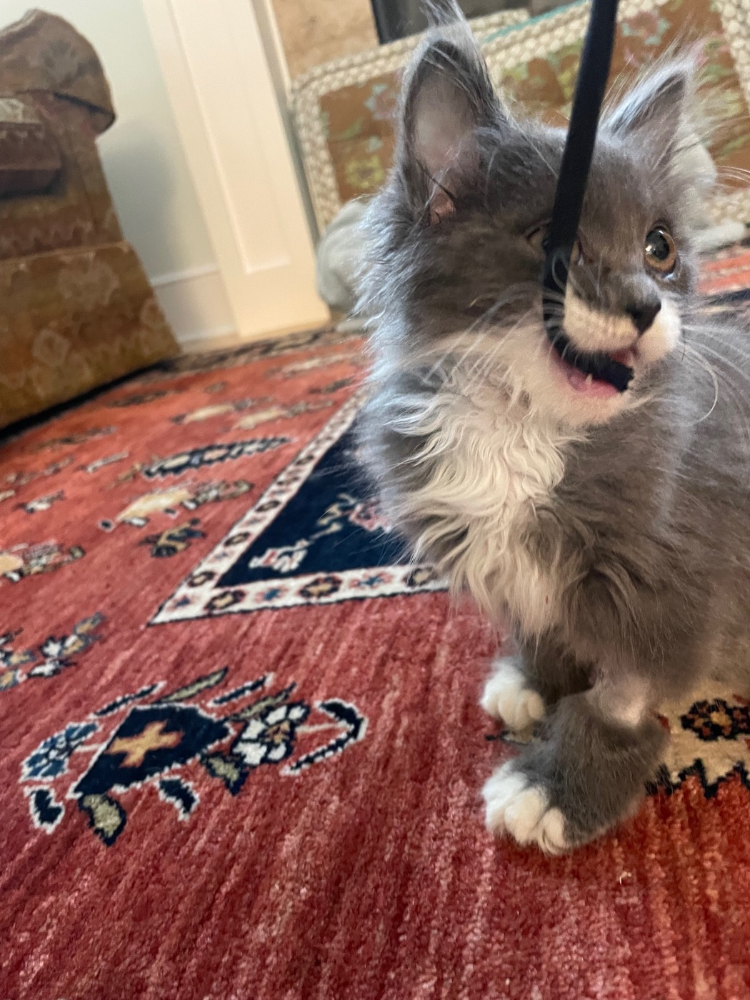
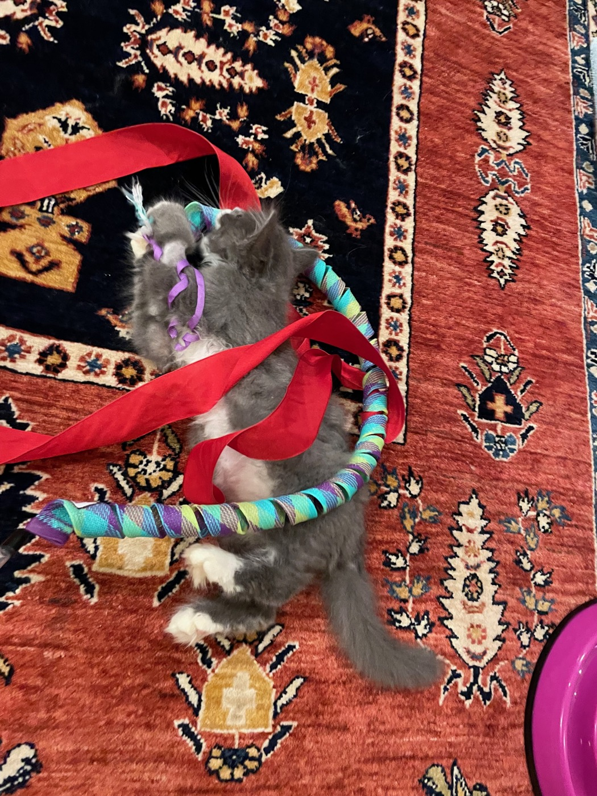
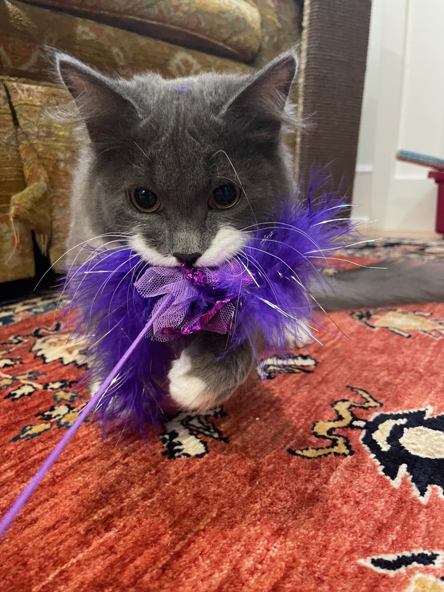
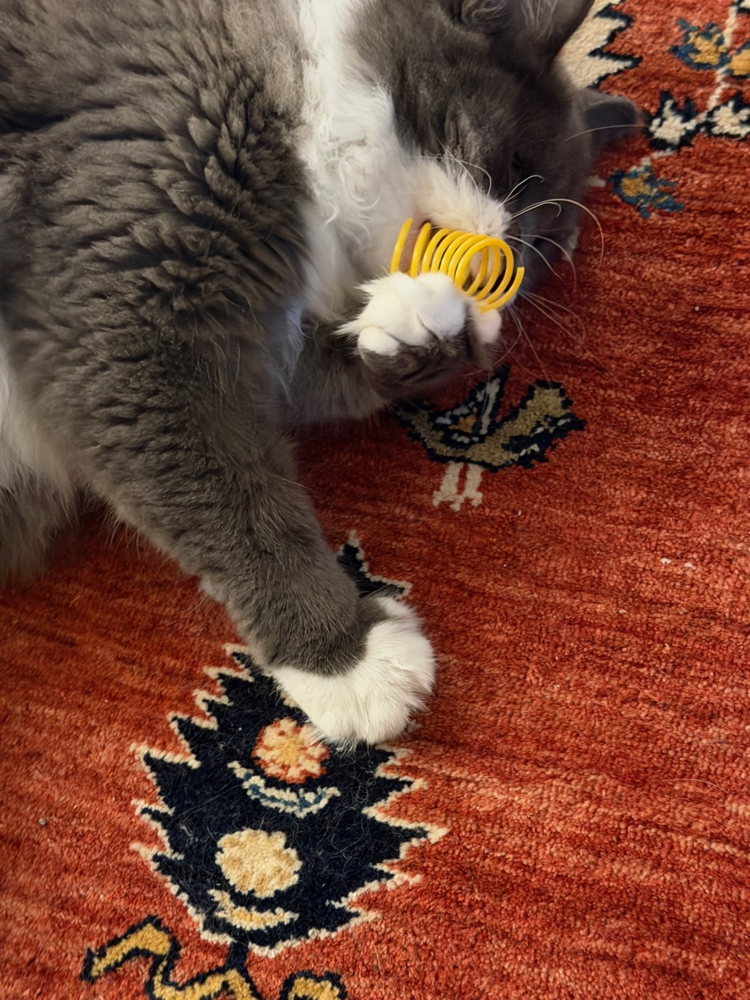
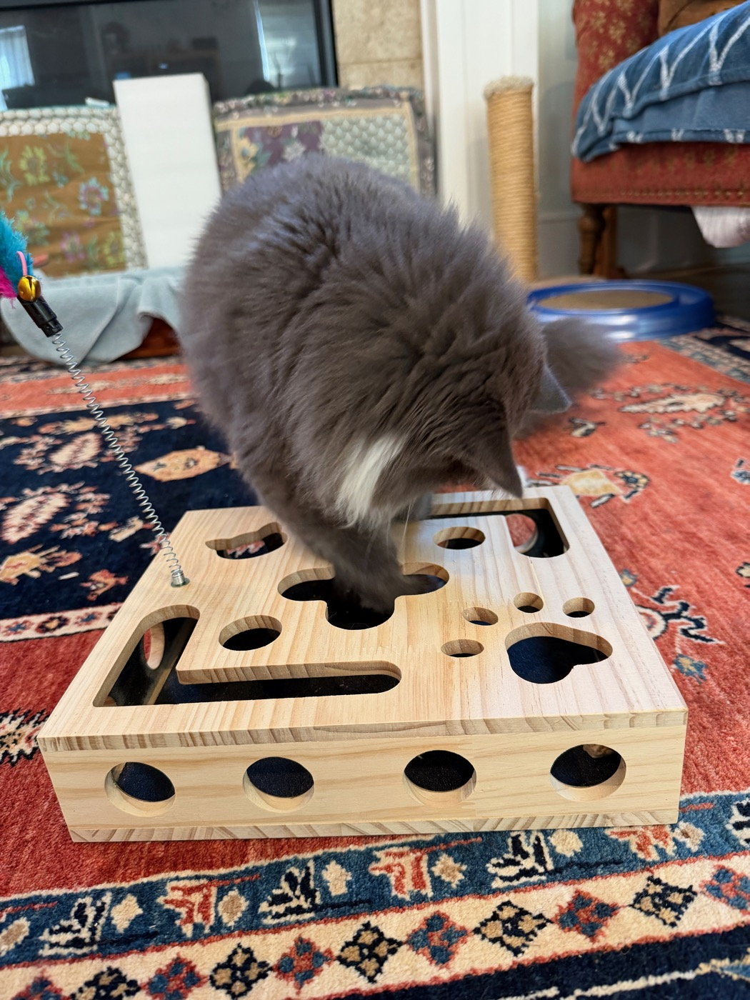

Entropy has been testing toys since he was three months old, and the household has kept the photographs. They cover eight months: a kitten not much bigger than what he was chewing, up to the nearly-eleven-month-old now working out how to beat a box designed to slow him down.
Early trials
In January everything got the same treatment: seized, bitten, reported to the camera. A hoody string was fair game whether or not anything was on the far end. The very same string became rather infamous later in the kittens' story — an episode never caught on camera, and one that may be related another time.

The pink scratcher-and-spinner got a warier review, approached from under a chair with both paws on the rim. A red ribbon on a woven wand got no review at all, only surrender: flat on his back, one white paw up, thoroughly wrapped.


The purple fluff
April, six months: a wand trailing a puff of purple feathers and tulle, on the fishing-pole principle — cast, retrieved, cast again. He caught it, and something new happened. A low growl, and then no interest whatsoever in giving it back. Retrieval was over. Whoever was holding the pole could go on holding it. He kept the fluff until he had shredded it.
A second, identical one lasted less time. He worked the purple tail free of the string and ran off with it, leaving the pole on the floor. The pole survived, and has since had a different toy tied to the end. Why this one in particular set him off — the growl, the refusal, the theft — nobody in the house can say. No other toy has come close.

Diminishing returns
June: a yellow plastic spring, batted rather than bitten. The one toy on record that got a paw before teeth.

August brought a wooden treat puzzle sold as a nail file: the claws wear down, in theory, on the way to the freeze-dried chicken inside. Entropy has gotten steadily faster at reaching the chicken. Whether the claws are getting any shorter is less clear.

Eight months, six toys, one growl, and a puzzle box that is, so far, losing.